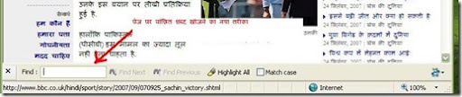

फायरफॉक्स के एक्सटेंशन पर मेरी लिखी हर पोस्ट पर समीरलालजी और सुरेश चिपनूलकरजी की शिकायत रूपी टिप्प्णी मिलती कि भाई हम आई ई (Internet Explorer) उपयोग करते हैं, कुछ हमारे लिये भी बताईये। तो दोनों भाई साहब आपकी नाराजगी दूर करने के लिये एक छोटा सा पर बहुत ही मजेदार जुगाड बता रहा हूँ।
इन्टरनेट एक्सप्लोरर में खुले किसी पेज पर जब हमें कोई वांछित शब्द खोजना होता है तो हम Ctrl+F कर खोज लेते हैं, जब भी हम यह कमांड दबाते हैं तो यह खिड़की खुलती है जो बहुत परेशान करती है

क्यों कि जब हमें कुछ देर बाद फिर से कोई शब्द खोजना होता है तब फिर से कमांड देना होता है। या फिर खीड़की को इधर उधर हटाना पड़ता है। फायरफॉक्स में यह कमांड देने पर पेज पर सबसे नीचे खिड़की खुलती है। हम चाहें तो इंटरनेट एक्सप्लोरर में भी खोजने का तरीका बदल सकते हैं, यानि फायर फॉक्स की तरह IE के किसी भी संस्करण में खिड़की को एकदम नीचे खोल सकते हैं।
आईये आपको इसका आसान सा तरीका बताते हैं
- सबसे पहले इस पेज को IE में खोल लेवें ( हमेशा की तरह FF में नहीं खोलना है इसे :) )
- सबसे पहले नीचे दिये चित्र पर एक बार क्लिक करें जिससे एक एक्सटेंशन डाउनलोड होगा, डरें नहीं यह भी बहुत छोटा(228Kb) सा है। जिससे डेस्क टॉप पर इस एक्सटेंशन की .EXE फाइल आ जायेगी।
- download-button1.png (original image)
- इस पर डबल क्लिक कर लेवें, जिससे इन्स्टाल होगा। इन्स्टाल करने के बाद IE रिस्टार्ट होगा, रिस्टार्ट करने के बाद कोई भी साईट खोल कर किसी शब्द को खोजने का कमांड यानि Ctrl+F दबायें।
- देख लीजिये पहले की तरह पेज पर खिड़की नहीं खुली बल्कि पेज के सबसे नीचे खुली है, कुछ इस तरह।

- अब आपको यह खिड़की बार बार इधर उधर हटाने की जरूरत नहीं होगी या बार बार बन्द कर और खोलनी नहीं होगी।